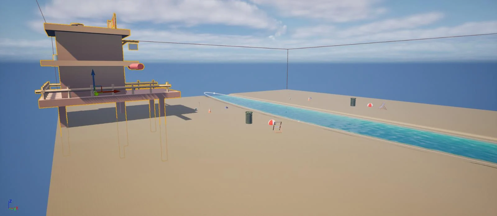
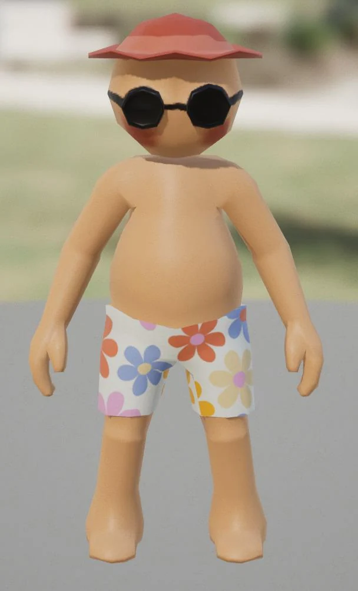

LA PLAYA
TE ESPERA.
Sol, arena, agua y un mundo lleno de detalles por descubrir. Bienvenido a Clean Beach, una aventura costera que está tomando forma.
Proyecto académico · Equipo 5

THE BEACH

WORLD!☼ ☼ ☼
EL UNIVERSO DE CLEAN BEACH
Una pequeña costa.
Muchas cosas por descubrir.
Clean Beach es un proyecto de videojuego 3D que transforma una zona de playa en un espacio con identidad propia: arena, agua, estructuras y objetos que cuentan una historia a través del entorno.
El equipo está construyendo el escenario en Unreal Engine 5, combinando modelos de playa, ambientación visual y un personaje diseñado para integrarse en este mundo.
DETRÁS DE LA PANTALLA
Un vistazo a Clean Beach.
Imágenes reales de los modelos y del escenario compartidos en la documentación del proyecto.
* Imágenes del proceso de desarrollo. La apariencia final del juego puede cambiar.
EN CONSTRUCCIÓN
De una idea
a un mundo 3D.
Clean Beach todavía está en desarrollo. Cada objeto, textura y detalle ayuda a convertir el boceto de la playa en un escenario más completo.
Concepto y planeación
PLANTEADOIdea visual, distribución del escenario y selección de modelos 3D.
Construcción del mundo
EN PROCESOMontaje del landscape, integración de utilería y ajustes del nivel.
Ambientación y personaje
EN PROCESOPruebas de partículas con Niagara y definición del personaje jugable.
Pulido y pruebas
SIGUIENTE FASEIluminación, detalle, optimización y validación del nivel en tiempo real.
HECHO CON CREATIVIDAD
Una playa, un equipo,
muchas ideas.
Clean Beach es un proyecto académico del Equipo 5 de la Facultad de Ciencias Físico Matemáticas de la Universidad Autónoma de Nuevo León. Una oportunidad para aprender diseño de videojuegos y dar vida a un mundo propio.
Volver al inicio